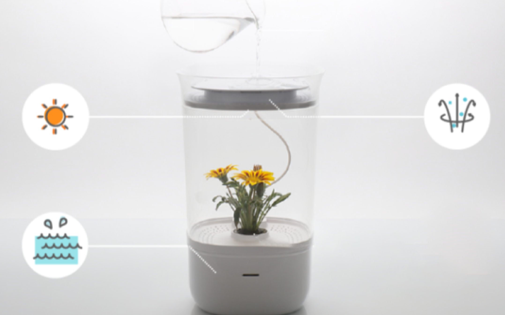

활동
나만의 인공지능 만들기
인공지능을 이용해 일상에서 불편을 겪었던 물건을
어떻게 바꿀 수 있을지 상상하여 글과 그림으로 표현해 봅시다.
일상에서 불편을 겪었던 물건을 적어 봅시다.
글상자를 이용해 보세요.
내가 상상한 인공지능을 표현해 봅시다.
여러가지 도구를 이용하여 글과 그림으로 표현해 보세요.
활동 예시
불편한 물건:
사람이 일일이 신경 쓰지 않으면 식물이 시들어 버리는 화분
내가 상상한 인공지능:
식물에 물이 부족할 때마다 자동으로 물을 주고, 햇빛이 부족하면 조명을 켜 주는 인공지능 화분
